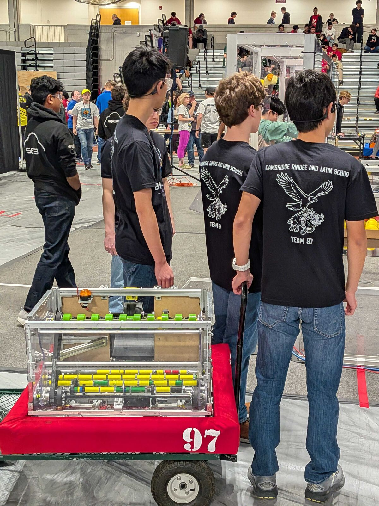
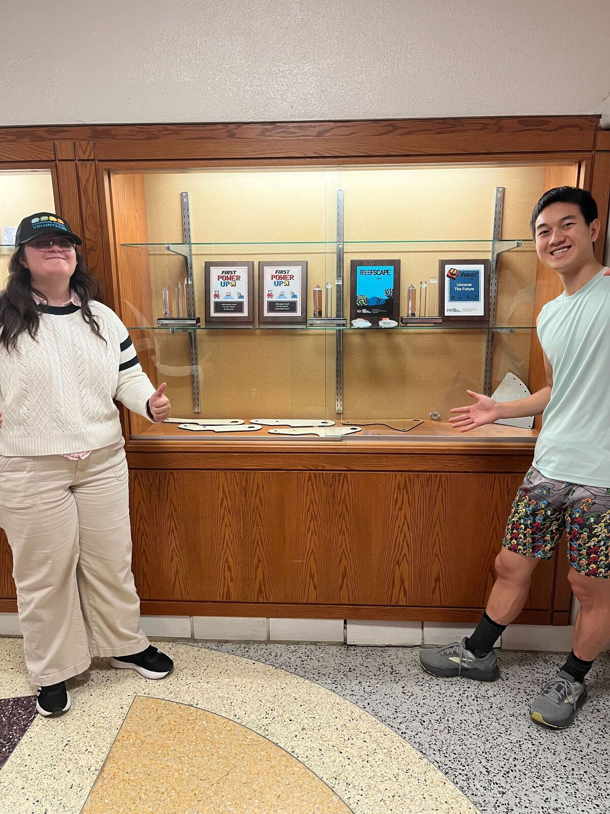

Thirty years of beef
Team 97 has represented Cambridge Rindge and Latin School in the FIRST Robotics Competition since 1996, making it one of the oldest FRC teams in New England.
Student-built, student-led
Bionic Beef is the FIRST® Robotics Competition team of Cambridge Rindge and Latin School (CRLS), Cambridge's public high school, working out of the shop at the Rindge School of Technical Arts. FIRST reveals a new game every January, and we have about two months to design, machine, wire and program a robot to play it.
Students lead the subteams and make the calls, with adult mentors helping along the way. Our rookie season was 1996. In 2007 we made it to the FIRST Championship and played in the Curie Division.
About the name: the eagle carrying a bionic bull on our shirts, the inflatable bull in the stands, the cow-print hats and the cow-print battery cart are all Team 97 tradition. The 01100001 you'll see around is 97 in binary.

Team history
From FIRST's official event records. Full results are on FIRST Events.
Team 97 joins the FIRST Robotics Competition for CRLS.
Best Play of the Day Award at the Johnson & Johnson Mid-Atlantic Regional.
Judges' Award at the UTC/New England Regional.
Qualified for the FIRST Championship and competed in the Curie Division.
Regional Finalist at the Boston Regional.
District Event Finalist at the NE District UMass Dartmouth Event.
Judges' Award at the Greater Boston District Event and the Creativity Award at the SE Mass District Event.
Our robot, Patrick Ewing, was picked for Alliance 2 at the URI District Event and reached the finals: District Event Finalist.
Rising All-Star Award at the NE District North Shore Event during the REBUILT™ season.
Student leadership
Have a question about a subteam? Find one of these people.
Thank you to our 2025–26 leaders, Min-Jae Kuo, Anania Tsegaye and Sebastian Ruiz, who led the team through its Rising All-Star season.
The trophy case
Thirty years of plaques deserve somewhere to live. This spring the team emptied, cleaned and set up a trophy case for our awards, the 2026 Rising All-Star plaque included.

Meet us in the pits
Find Team 97 at New England District events every spring, or in the shop at CRLS during build season.